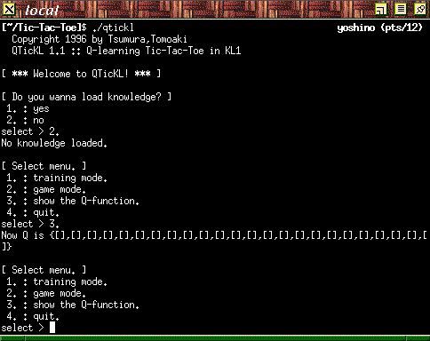

起動すると先ずプログラムは、カレンとディレクトリで ``q.kl1'' という名前のファイルを探し、存在すればそれをロードするかどうか ユーザに確認する。``q.kl1'' は Q値の格納されたファイルであり、 前回プログラム終了時に指示した場合作成される。
知識データをロードした場合それが今回の Q値の初期値として用いられ、 ロードしなかった場合は新たに初期値（全く無知の状態）が設定される。

![[i18n checked]](i18n-ok.gif) Q-learning により学習を行う Tic-Tac-Toe プログラム
Q-learning により学習を行う Tic-Tac-Toe プログラム